Input
Content warning: this page contains images of facial injuries that readers may find unpleasant.
All reconstructions are AI-generated renderings, intended to support—not replace—forensic
identification workflows, with final determinations always verified by professionals.
Abstract
Every day, many people die under violent circumstances, whether from crimes, war, migration, or climate disasters. Medico-legal and law enforcement institutions document many portraits of the deceased for evidence, but cannot immediately carry out identification on them. While traditional image editing tools can process these photos for public release, the workflow is lengthy and produces suboptimal results.
In this work, we leverage advances in image generation models, which can now produce photorealistic human portraits, to introduce FlowID, an identity-preserving facial reconstruction method. Our approach combines single-image fine-tuning, which adapts the generative model to out-of-distribution injured faces, with attention-based masking that localizes edits to damaged regions while preserving identity-critical features. Together, these components enable the removal of artifacts from violent death while retaining sufficient identity information to support identification.
To evaluate our method, we introduce InjuredFaces, a novel benchmark for identity-preserving facial reconstruction under severe facial damage. Beyond serving as an evaluation tool for this work, InjuredFaces provides a standardized resource for the community to study and compare methods addressing facial reconstruction in extreme conditions. Experimental results show that FlowID outperforms state-of-the-art open-source methods while maintaining low memory requirements, making it suitable for local deployment without compromising data privacy.
Method
FlowID is an inversion-based editing method built on the Stable Diffusion 3 latent flow-matching model. Given an injured portrait and a textual description, it removes the artifacts of violent death while preserving identity-critical features, through two components: single-image fine-tuning, which adapts the model to the out-of-distribution input so that inversion retains identity, and localized editing with attention-inferred masks, which confines edits to the damaged regions.
Single-Image Fine-Tuning
Inversion-based editing integrates the probability-flow ODE up to a strength \(t_s\); when the inversion is imperfect, crucial identity information is lost and cannot be recovered during reconstruction. Part of this error stems from the fact that the input image is not a sample produced by the model. FlowID therefore begins by fine-tuning the pretrained SD3 model on the single image–prompt pair, making the image a more likely sample under its source prompt \(P^{src}\). As the number of fine-tuning steps \(N\) increases, reconstruction error decreases steadily and identity-related attributes emerge early in the process.
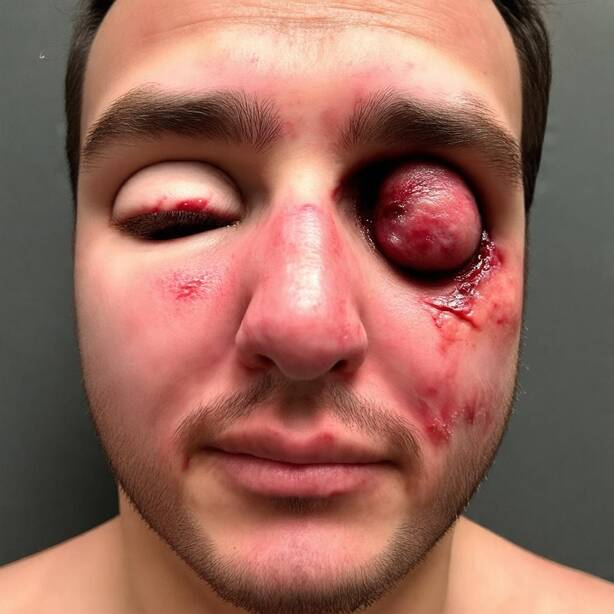
\(N=0\)
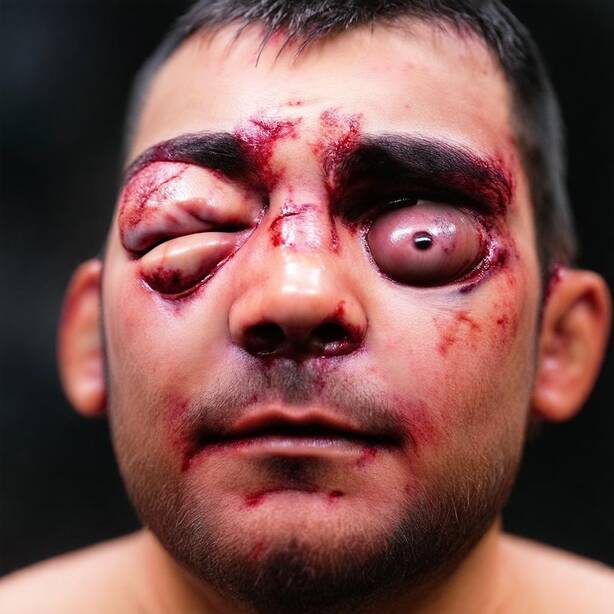
20
40
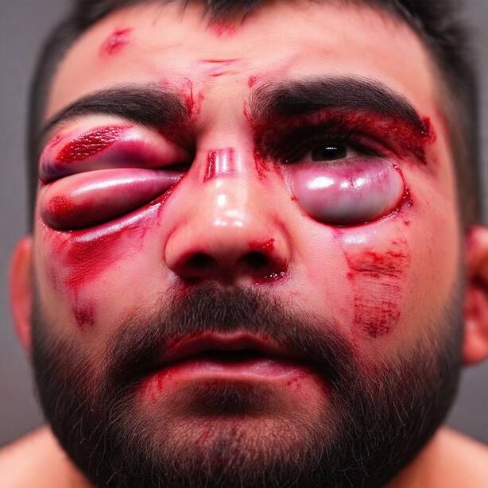
60
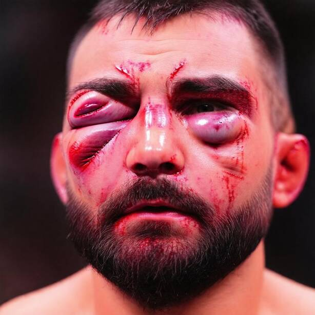
80
100
Localized Editing with Inferred Masks
Recognizing a person relies on morphological cues (the shape of the nose, mouth, or jaw) but also on secondary cues such as tattoos or jewelry, which the generation process may inadvertently alter. To prevent this, FlowID derives a binary mask \(M\) from the model's own cross-attention maps between the image tokens and the concept tokens to be edited. The maps are averaged over all attention heads and transformer blocks, binarized with a k-means step, and enlarged with a max-pooling operation so the mask slightly overshoots the edit region. At every solver step, reference content is pasted back outside the mask, so only the targeted region is modified while the rest of the face is preserved exactly.
Input
w/o Masking
w/ Masking
Results
We compare FlowID against UltraEdit, SDEdit, ICEdit, Kontext, and RF-Solver on our InjuredFaces benchmark and on FFHQ. To ensure a fair evaluation, image-quality and distortion metrics are computed only over images where the edit was successfully applied, since methods that fail to modify the target attribute would otherwise trivially score high on preservation.
Input
FlowID
Kontext
RF-Solver
ICEdit
UltraEdit
SDEdit
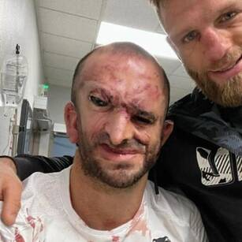
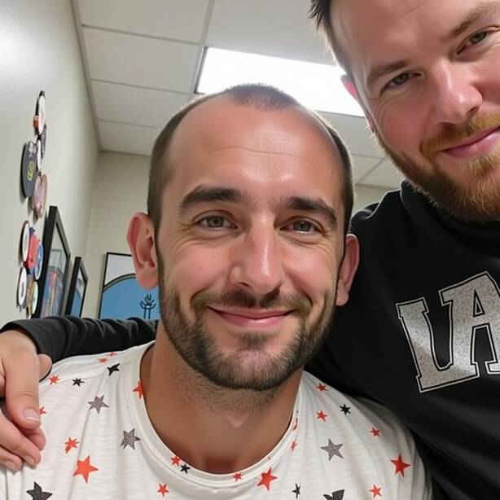
| Method | IP ↑ | CLIP ↓ | FID ↓ | CMMD ↓ | LPIPS ↓ | VLM ↓ |
|---|---|---|---|---|---|---|
| UltraEdit | 0.30 | 0.23 | 116.44 | 2.36 | 0.20 | 0.19 |
| SDEdit | 0.23 | 0.24 | 104.48 | 2.29 | 0.24 | 0.15 |
| ICEdit | 0.22 | 0.25 | 190.43 | 2.61 | 0.24 | 0.88 |
| Kontext | 0.48 | 0.24 | 128.78 | 3.47 | 0.10 | 0.28 |
| RF-Solver | 0.48 | 0.24 | 117.88 | 3.12 | 0.14 | 0.36 |
| FlowID | 0.50 | 0.23 | 123.07 | 3.09 | 0.12 | 0.14 |
(a) InjuredFaces
| Method | IP ↑ | CLIP ↑ | FID ↓ | CMMD ↓ | LPIPS ↓ | VLM ↑ |
|---|---|---|---|---|---|---|
| UltraEdit | 0.46 | 0.26 | 35.28 | 0.83 | 0.24 | 0.84 |
| SDEdit | 0.13 | 0.28 | 69.10 | 1.80 | 0.49 | 0.61 |
| ICEdit | 0.75 | 0.27 | 36.37 | 0.58 | 0.19 | 0.65 |
| Kontext | 0.72 | 0.27 | 31.30 | 0.85 | 0.20 | 0.96 |
| RF-Solver | 0.26 | 0.28 | 51.59 | 1.38 | 0.31 | 0.87 |
| FlowID | 0.77 | 0.27 | 29.04 | 0.45 | 0.11 | 0.94 |
(b) FFHQ
Quantitative comparison on (a) InjuredFaces and (b) FFHQ (↑ higher is better, ↓ lower is better; best in bold). FlowID achieves the strongest identity preservation while effectively removing injuries, outperforming larger Flux-based models despite its more lightweight SD3 backbone and its low memory footprint suitable for local deployment.
Supplementary Material
A. Additional Details on InjuredFaces
\(I_{inj}\)
…
\(I_{ref}\)
“a person's face, injured”
\(P\)
🧮
\(a\)
Figure A1 shows a sample from our InjuredFaces dataset. Each injured face represents a row in our dataset. It comes with sane portraits of the same person, a textual description of the injured portraits, and an embedding vector \(a\), computed as the average of identity embeddings.
Figure A2 provides additional insight into the identity preservation metric. The cosine similarity matrix illustrates pairwise identity similarities across multiple identities, with higher values along same-identity pairs and substantially lower values for mismatched identities. Together, these visualizations confirm that the identity embedding produces consistent representations for the same individual, supporting its use as a reference for identity preservation evaluation.
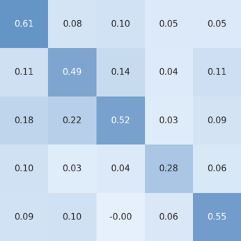
B. Implementation Details
Both InjuredFaces and FFHQ benchmarks were run on an A100 GPU cluster. For methods that use source and target prompts like ours, we use the prompt describing the injured photo from InjuredFaces as the source, and “a person's face” as the target. For instruction-based methods, we infer the edit instructions based on the source and target prompt with simple rules. For implementations that allow negative guidance, we extract the injury description from the source prompt by removing “a person's face” from the prompt. Our method uses the Adam8Bit optimizer in order to lower the memory requirements for compatibility with consumer hardware. We run all fine-tunings with a batch size of 1, gradient accumulation of 10, 80 optimizer steps, and a learning rate of 5e-5. These details allow us to run FlowID on an NVIDIA RTX 4090 GPU.
For instruction-based methods we check for the presence of a given type of injury and turn it into an instruction, e.g. if “wound” is in the description, the instruction becomes “remove the wound”. Checked attributes are: “wound”, “blood”, “mouth open”, “bump”, “bruise”, “cut”, “injury”, “swollen”. For ICEdit, we used the following prompt: “A diptych with two side-by-side images of the same scene. On the right, the scene is exactly the same as on the left but {instruction}” where the instruction follows the above rule. For RF-Solver, we use default parameters except for the number of feature injection steps, which we set to 10, as it yielded the best balance between identity preservation and edit insertion. Similarly we used a strength \(t_s\) of 0.65 for SDEdit.
C. Additional Results on FFHQ
We further evaluate performance on sequences of five consecutive edits, always applying attribute modifications in the same fixed order for each identity. To ensure consistency, if an edit fails the sequence is terminated and we move on to the next identity. Success rates for both sequential edits on FFHQ and one-step edits on InjuredFaces can be seen in Table C1. We notice that our method tends to edit more strongly than others, thus motivating the need for the filtering mentioned in the main paper. Results for the editing sequences are shown in Figure A3. We observe trends consistent with the single-shot setting: our method achieves the best scores across all metrics, while maintaining a success rate nearly on par with the strongest competitors. Figure C2 provides a qualitative comparison. Our approach better preserves the appearance of the original identity throughout the sequence, whereas Kontext, although faithful in applying edits, tends to generate unrealistic textures as edits accumulate, an effect also reflected in its higher FID values.
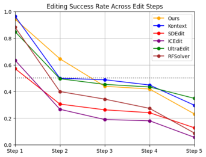
(a) Editing success
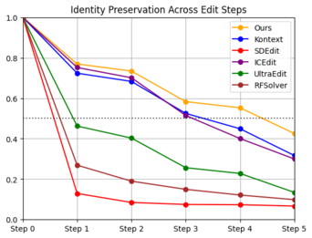
(b) Identity preservation
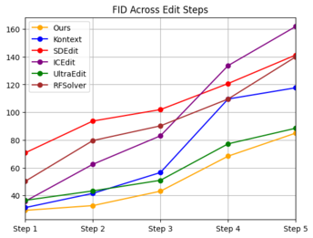
(c) FID
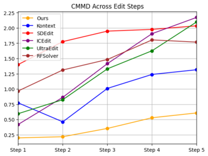
(d) CMMD
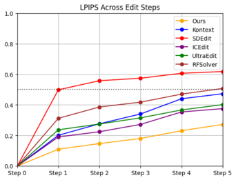
(e) LPIPS
| Method | FFHQ | InjuredFaces | ||||
|---|---|---|---|---|---|---|
| Step 1 | Step 2 | Step 3 | Step 4 | Step 5 | Step 1 | |
| UltraEdit | 0.85 | 0.84 | 0.83 | 0.80 | 0.78 | 0.84 |
| SDEdit | 0.58 | 0.58 | 0.57 | 0.56 | 0.56 | 0.86 |
| ICEdit | 0.64 | 0.58 | 0.54 | 0.46 | 0.43 | 0.10 |
| Kontext | 0.97 | 0.96 | 0.96 | 0.93 | 0.92 | 0.52 |
| RF-Solver | 0.88 | 0.86 | 0.86 | 0.85 | 0.85 | 0.67 |
| FlowID | 0.97 | 0.96 | 0.95 | 0.94 | 0.93 | 0.95 |
Input+ “light hair”− “earrings”+ “glasses”+ “hat”− “smile”
FlowIDKontextICEditRF-SolverUltraEditSDEdit

BibTeX
@article{ripoll2026flowid,
title={FlowID: Enhancing Forensic Identification with Latent Flow-Matching Models},
author={Ripoll, Jules and Bertoin, David and Newson, Alasdair and Dossal, Charles and Baraybar, Jose Pablo},
journal={arXiv preprint arXiv:2603.29591},
year={2026},
url={https://arxiv.org/abs/2603.29591}
}